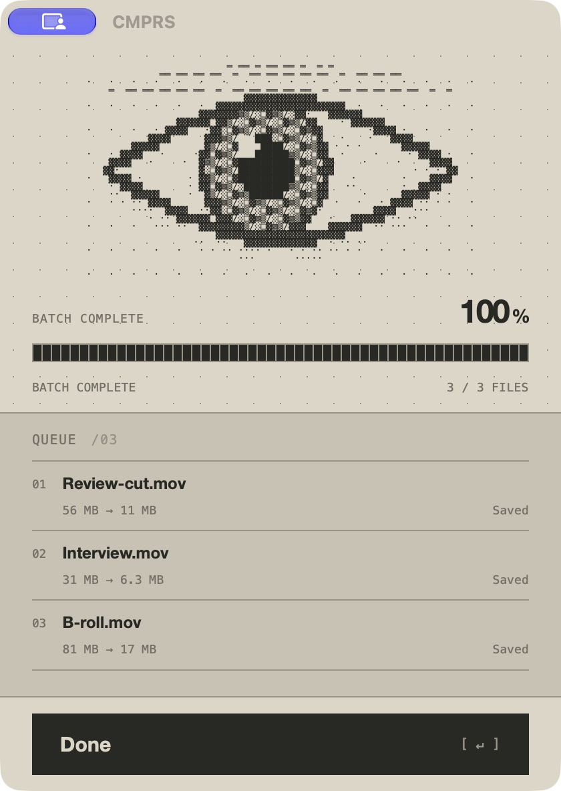

VIDEO. COMPRESSED.
Smaller videos.
Ready to send.
Select. Compress. Send.
Download for Mac
Apple Silicon · macOS 13+
Always MOV

[ CMPRS / 2.0.0 ]
56MB
Before
{ 0110 }>>{ 1001 }>>{ 0011 }
11MB
After
Example file. Results vary.
Select
Right-click
CMPRS — Compress video
Done